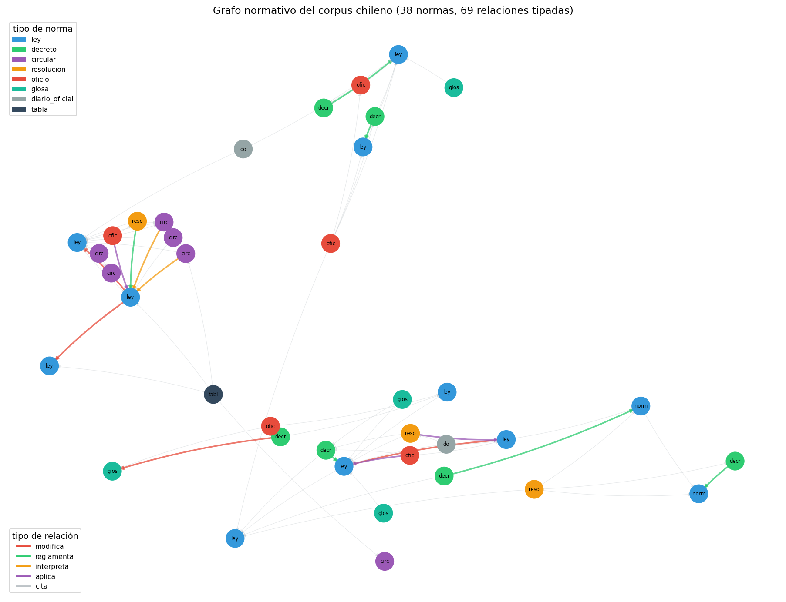

02 — Modelado del dominio regulatorio chileno¶
El método: preguntas antes que esquema¶
La tentación al modelar un dominio es empezar por las entidades: "necesito
una clase Norma, una clase Artículo, una clase Organismo...". Es el orden
equivocado. 01 §4 ya estableció el método correcto para golden datasets —
escribir las preguntas que el sistema debe responder antes de decidir su
estructura— y esta sección aplica el mismo método a la ontología: las
competency questions primero, el esquema después.
Es, otra vez, algo que el autor ya practica sin el nombre: nadie diseña una tabla de base de datos para un análisis de política pública sin antes saber qué preguntas el análisis necesita responder. La ontología no es distinta.
La analogía: especificar las hipótesis antes de estimar el modelo¶
Un economista que corre una regresión sin haber escrito antes qué relación espera encontrar termina "explicando" cualquier coeficiente que le salga. Un modelo de ontología diseñado sin competency questions termina igual: entidades y relaciones elegantes que no responden ninguna pregunta real del dominio. El orden importa tanto en un caso como en el otro.
Código en ontology_lib.py (extensión de §1);
demo en code/02-grafo-normativo.py; datos
en examples/relaciones-manual.json.
Las competency questions de este módulo¶
Escritas antes de tocar el esquema, con el corpus de B6 a la vista:
- ¿Qué normas modifica una ley dada?
- ¿Qué normas modifican a una norma dada? (la pregunta inversa — "¿sigue vigente tal como fue escrita?")
- ¿Qué documento reglamenta una ley dada?
- ¿Qué documentos dependen, directa o transitivamente, de una norma dada, sin límite de saltos?
- ¿Puede una sola respuesta distinguir "lo menciona" de "depende de un cambio en ella"?
Cada una de las cinco exige algo que el metadata plano de 02 §7 no tiene:
una relación tipada y transitiva entre documentos, no una columna de
atributos por documento.
El vocabulario, extraído del propio corpus¶
No se inventó un vocabulario de relaciones desde una teoría general de ontologías legales. Se leyó el corpus y se contaron los verbos que las normas chilenas usan para referirse unas a otras: "modifícanse", "derógase", "reglamenta la Ley Nº...", "conforme a", "en virtud de". De ahí salieron seis relaciones:
| Relación | Qué implica | Verbo real en el corpus |
|---|---|---|
MODIFICA |
el texto original cambió | "Introdúcense las siguientes modificaciones...", "Sustitúyese el artículo..." |
DEROGA |
el texto original dejó de regir | (no aparece en el corpus actual — ver nota) |
REGLAMENTA |
ambas normas están vigentes; una depende de la otra | "Aprueba Reglamento de la Ley Nº..." |
INTERPRETA |
ninguna deja de regir por la existencia de la otra | "Imparte instrucciones sobre..." |
APLICA |
usa la norma para resolver un caso concreto | "Absuelve consulta...", dictámenes de Contraloría |
CITA |
mención sin implicancia sobre vigencia | "conforme a", "de conformidad con", "en virtud de" |
Nota honesta:
DEROGAestá en el esquema porque es una relación real del dominio (una ley puede derogar a otra completa o parcialmente), pero no aparece en las 69 relaciones curadas de este corpus — ninguno de los 40 documentos deroga a otro. Se mantiene en el vocabulario porque excluirla sería sobre-ajustar el esquema a los datos disponibles en vez de al dominio que representan.
Por qué no basta con una relación genérica¶
Colapsar las seis relaciones en una sola ("se relaciona con") es la simplificación obvia, y es exactamente la que pierde lo que le importa al dominio. Contadas sobre las 69 relaciones curadas:
relación | ocurrencias | ejemplo verificado
------------------------------------------------------------------------------------------
cita | 54 | oficio --[cita]--> ley
reglamenta | 6 | decreto --[reglamenta]--> ley
modifica | 4 | decreto --[modifica]--> glosa
aplica | 3 | oficio --[aplica]--> ley
interpreta | 2 | circular --[interpreta]--> ley
CITA domina en volumen —es la relación "débil", sin implicancia sobre
vigencia— pero MODIFICA y REGLAMENTA son las que de verdad importan:
determinan si un texto sigue rigiendo tal como fue escrito. Numéricamente
son minoría; jurídicamente son el motivo por el que se construye el grafo.

Se ven los cuatro clusters de B6 como componentes casi separadas —compras
públicas, tributario, presupuesto, probidad/educación— unidas por unas
pocas aristas grises de CITA que cruzan de un cluster a otro (el
oficio-01 sobre subvenciones, citado por el oficio-05 de traspaso a
Servicios Locales, es la más visible: la línea roja gruesa que atraviesa
el diagrama es justamente esa dependencia entre clusters).
Las competency questions, respondidas¶
P1 — ¿Qué normas modifica la Ley 21.210?
Una sola ley, dos normas modificadas en artículos distintos (el artículo
primero modifica el DL 825; el artículo segundo, el DL 824). Es el ejemplo
concreto de por qué el modelo "doc reemplaza doc" que 02 §9 marcó como
insuficiente lo es: la Ley 21.210 no reemplaza a ninguna de las dos leyes
que toca, las modifica parcialmente y en paralelo. §6 retoma esto para
llevarlo a nivel de artículo con vigencia temporal.
P2 — ¿Qué normas modifican al DL 825?
La pregunta inversa a P1, resuelta invirtiendo la dirección del recorrido
(vecinos_por_relacion(..., direccion="in")) sin tocar el esquema.
P3 — ¿Qué documento reglamenta la Ley 19.886?
P4 — ¿Qué documentos se relacionan directamente con la SEP (Ley 20.248)?
<- decreto-01-subvencion-escolar.txt
<- decreto-06-reglamento-servicios-locales.txt
<- do-01-extracto-decreto-aranceles.txt
<- glosa-02-presupuesto-educacion.txt
<- ley-09-ley-21040-educacion-publica.txt
<- oficio-01-contraloria-subvenciones.txt
<- oficio-05-contraloria-traspaso-slep.txt
Los siete documentos tienen una arista directa hacia ley-08. La
versión inicial presentó oficio-05 como caso multi-hop porque su cita
directa a la Ley 20.248 no estaba anotada. Corregir el ground truth elimina
el supuesto recorrido de dos-tres saltos: P4 demuestra el valor de una
consulta estructurada, pero no el de la transitividad.
El grafo corregido sí contiene rutas multi-hop genuinas. Por ejemplo:
La modificación presupuestaria cita la Ley de Presupuestos; esta cita la
Ley de Compras; y esta última cita la Ley 18.575. §8 evalúa esta clase de
pregunta con un golden estructural separado, sin reutilizar P4 como prueba.
Por qué un solo tipo de relación no alcanza (el caso completo)¶
Para hacer explícito el costo de simplificar, se comparó el conjunto de
documentos que dependen del DL 825 usando solo CITA contra usarlo junto
con MODIFICA:
Documentos que CITAN al DL 825, directa o transitivamente: 9
Documentos que citan O modifican, en cualquier número de saltos: 10
La diferencia es ley-02: modifica al DL 825, no solo lo menciona. El
resto llega por CITA directa o transitiva; la versión inicial subcontaba
esas citas por la incompletitud del ground truth.
Un grafo con una sola relación genérica puede contar cuántos documentos mencionan al DL 825. No puede separar "lo menciona" de "depende de un cambio en él" — la pregunta que le importa a quien tiene que auditar si una norma sigue vigente tal como fue escrita en 1974.
El esquema en Pydantic¶
Tres clases, siguiendo el patrón ya establecido en el repo (Chunk en
retrieval_lib, PromptTemplate en prod_lib, ModelSpec en econ_lib):
Norma: identidad mínima (id, tipo, identificador oficial, título).RelacionNormativa: una arista tipada con fundamento textual obligatorio — una cita literal que permite auditarla contra la fuente.§5puntúa(origen, tipo, destino); el fundamento se revisa como trazabilidad, no como parte de esa métrica.TipoRelacion: el enum de seis valores de la tabla de arriba.
La verdad fundamental que este módulo deja construida¶
Las 69 relaciones de esta sección no son solo una demo: son curadas a
mano por lectura directa del texto, cada una con su fundamento citado, y
quedan guardadas en examples/relaciones-manual.json con ese propósito
explícito. §5 va a extraer relaciones automáticamente con un LLM sobre el
corpus completo; este conjunto es la vara con la que se va a medir si esa
extracción acierta.
Cobertura: 38 de 40 documentos del corpus. Quedan fuera glosa-03 y
tabla-01, que no contienen referencias explícitas a otro documento del
catálogo. glosa-02 ya no se trata como distractor: cita literalmente la
Ley 20.248 y forma parte de la ontología.
Estado del arte (2026)¶
| Aspecto | Estado | Detalle |
|---|---|---|
| Vocabularios de relaciones legales tipadas | ✅ Práctica establecida | Legislation.gov.uk, EUR-Lex y sistemas legaltech usan esquemas similares (amends, repeals, implements) |
| Extracción de relaciones desde verbos del propio texto | 🟢 Método sólido | Más robusto que importar una ontología genérica; el vocabulario legal chileno tiene sus propios verbos técnicos |
| Fundamento textual obligatorio por relación | 🟢 Best practice en legaltech serio | Auditable; sin él, una relación extraída automáticamente no es verificable |
| Datasets curados a mano como ground truth de extracción | ✅ Estándar en NLP | Es exactamente lo que se hizo acá para preparar §5 |
| Ontologías legales formales (LKIF, Akoma Ntoso) | 🟡 Maduras pero pesadas | Resuelven más de lo que este corpus necesita — el argumento de §3 |
Lo que viene en la próxima sección¶
Esta sección diseñó qué modelar. La siguiente pregunta es cuánto
formalismo comprar para modelarlo: seis relaciones y un grafo dirigido con
networkx ya alcanzan para responder las cinco competency questions de
arriba. §3 hace explícita la regla de decisión que evita comprar más de
lo que hace falta.
Conexiones¶
01 §4(golden datasets): mismo método — preguntas antes que esquema — aplicado a otro artefacto.01 §8(estadística): cuando§5mida la tasa de error de la extracción automática contra esta verdad fundamental, usará el mismo aparato de deltas e IC.02 §7(metadata filtering): P4 se responde con una arista directa; el valor diferencial de la transitividad se evalúa por separado en §8.02 §9(casos límite): P1 es el ejemplo concreto del límite que esa sección dejó abierto sobre versionado a nivel artículo.B6: las cadenas de citas diseñadas a propósito en el corpus son el insumo de las 69 relaciones explícitas de esta sección.§5:relaciones-manual.jsones la verdad fundamental contra la que se mide la extracción con LLM.